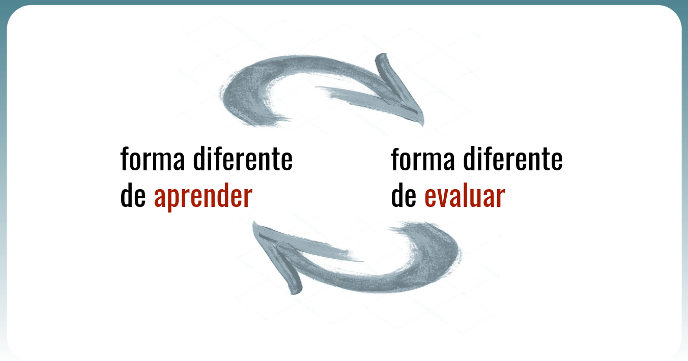

Evaluación
La Evaluación Formativa
Podemos definir la evaluación como el conjunto de actividades programadas para recoger información sobre la que profesorado y alumnado reflexionan y toman decisiones para mejorar sus estrategias de enseñanza y aprendizaje. Evaluar es más que calificar. Una evaluación formativa se centra en la compresión del funcionamiento cognitivo del estudiante frente a las tareas que se le proponen: busca comprender por qué un alumno no sabe hacer una tarea y le ayuda a identificar sus errores.
Según Cristóbal Cobo, la evaluación es la innovación pendiente ya que, si bien vivimos en un momento de efervescencia y cambios metodológicos, estas nuevas prácticas deben conllevar un cambio profundo en la manera de evaluar.

Qué, cómo, cuándo y quién evalúa
Instrumentos y procedimientos
Según la legislación vigente, y en consonancia con los principios anteriormente expuestos, nuestra forma de evaluar debe ser variada, siendo incoherente escoger solo un procedimiento de evaluación.
- Procedimientos de evaluación
-
Los procedimientos responden a cómo se lleva a cabo la recogida de información. Una clasificación tradicional puede ser por medio de: la observación en el aula (observancia de interacciones en el aula por ejemplo); el análisis de las producciones de los alumnos (trabajos, tareas, productos...); los intercambios orales (por ejemplo exposiciones orales), las pruebas específicas y cuestionarios (exámenes, tipo tets...); y la autoevaluación y coevaluación (procedimientos para evaluar el propio aprendizaje y para evaluar el aprendizaje de los compañeros).
- Instrumentos de evaluación
-
Los instrumentos responden a los documentos o registros utilizados para recoger la información. De una manera general, podemos distinguir:
1. Instrumentos asociados a la observación: las listas de control o las escalas de observación.
2. Instrumentos asociados al análisis de producciones del alumnado: las rúbricas de evaluación, el portfolio, los textos escritos y producciones de todo tipo, la resolución de ejercicios y problemas...
3. Instrumentos asociados a los intercambios orales: la asamblea, las exposiciones y puestas en común, las entrevistas...
4. Instrumentos asociados a las pruebas específicas y cuestionarios: exámenes y tests.
5. Instrumentos asociados a la autoevaluación y coevaluación: el diario de aprendizaje, la diana de evaluación o la escala de metacognición.
El porfolio, la rúbrica de evaluación, la diana y el diario de aprendizaje destacan debido a que arrojan información muy importante sobre el proceso de aprendizaje, facilitando el feedback y por lo tanto una evaluación verdaderamente formativa, sin menoscabo de otros instrumentos que también son importantes como pueden ser las pruebas objetivas.
Podemos encontrar ejemplos de rúbricas, plantillas y documentos de evaluación en el Banco de rúbricas y otros documentos de Cedec.
En el siguiente vídeo hallamos una breve descripción de los instrumentos de evaluación:
Obra publicada con Licencia Creative Commons Reconocimiento Compartir igual 4.0